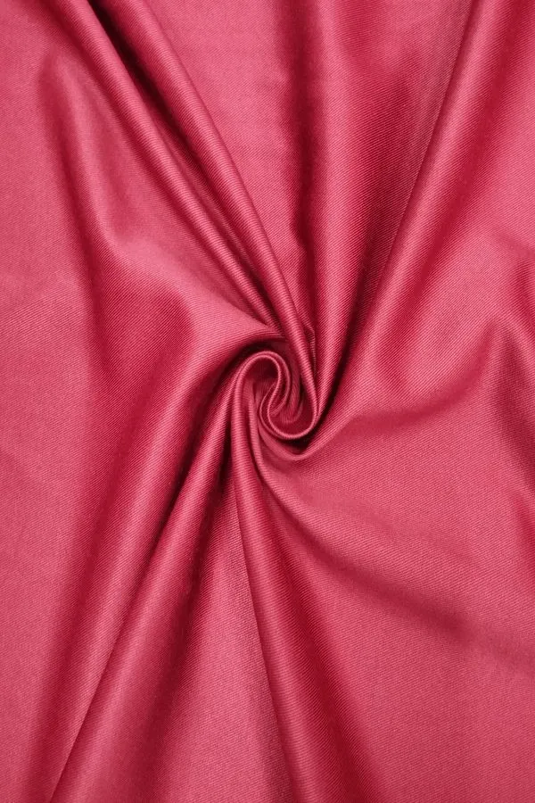

Tecido
Mac Twill PET

Mac Twill PET é um tecido em sarja de 54% algodão e 46% poliéster, 174 g/m² e 1,60 m de largura, produzido com fios reciclados de PET, versátil para alfaiataria. Indicado para casacos, saias, calças, coletes e shorts — disponível em 2 cores.
Cód. 26250
Mac Twill PET
- Composição
- Gramatura
- 174 g/m²
- Largura
- 1,60 m
- Ligamento
- Sarja
- Aplicações
- CasacosSaiasCalçasColetesShorts
- Material
- PET reciclado
Cores disponíveis 2
-
 0372
Off White
Pantone 11-0608 TCX
0372
Off White
Pantone 11-0608 TCX
-
 9999
Preto
Pantone 19-4007 TCX
9999
Preto
Pantone 19-4007 TCX
Instruções de lavagem
- Lavar separadamente, nas primeiras lavagens a peça pode soltar tinta residual.
- Para peças com combinação de cores, recomendamos lavagem manual.
- Não misturar cores claras e coloridas ao lavar as peças.
- Evite friccionar com força ao lavar a peça com a mão.
- Não misturar peças leves com peças pesadas.
- Enxague as peças com água em abundância.
- Lavar a temperatura ambiente.
- Não deixar de molho.
- Não torcer o tecido.

{kind=link}